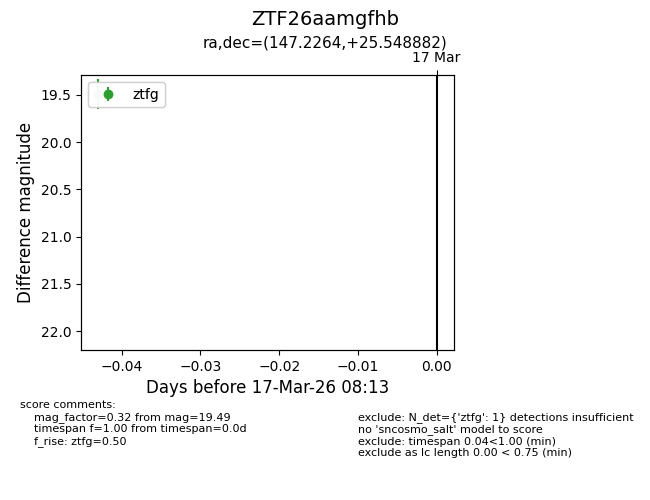
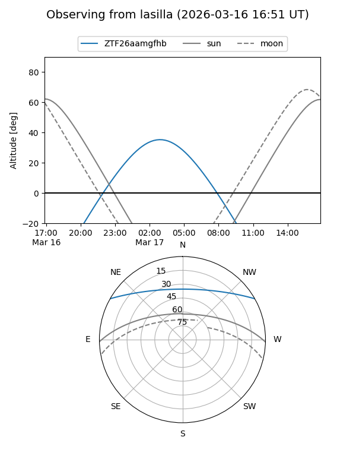
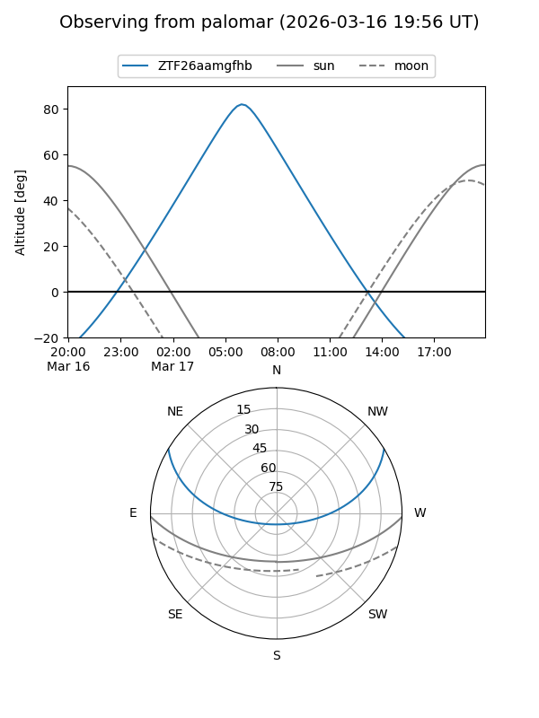

ZTF26aamgfhb
Target ZTF26aamgfhb at 2026-03-17 08:15
Aliases and brokers:
FINK: link
Lasair: link
ALeRCE: link
alt names
ZTF26aamgfhb (ztf,fink_ztf)
Coordinates:
equatorial (ra, dec) = 147.2264,+25.54888
equatorial (HMS+DMS) = 09:48:54.35,+25:32:55.98
galactic (l, b) = (204.4516,+49.29962)
Flags:
Photometry:
last ztfg=19.49
1 ztfg detections
Lightcurve

Visibility


Additional plots